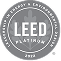
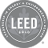
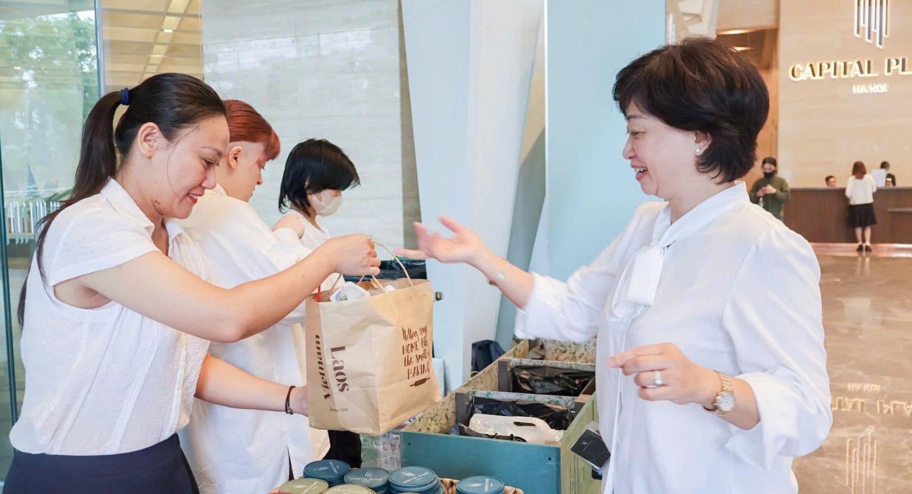
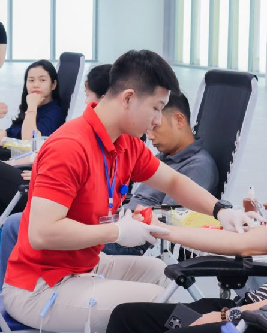
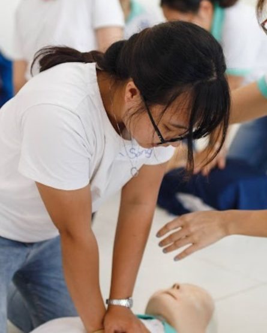

Operations & MaintenancePlatinum
Certified for the way the building performs every day.

Sustainability
01 · Dual LEED certified
Capital Place is the first building in Hanoi to achieve both LEED Platinum for Operations & Maintenance and LEED Gold for Building Design & Construction.

Operations & MaintenanceCertified for the way the building performs every day.


Building Design & ConstructionCertified from design and construction.
02 · Performance at scale
Selected performance indicators published by Capital Place, presented with their original qualifiers.


 Tower section · systems explained alongside
Tower section · systems explained alongside03 · Inside the building
Systems work together quietly behind the scenes to optimise energy, water and everyday performance.
Low-E glazing helps reduce solar heat gain, supporting the building's cooling performance.
Up to 69% cooling energy saved04 · Low-E façade
05 · Water management
Water is treated as a journey through the building, from daily use to responsible reuse across the landscape.
10,000 m³ clean water saved annually06 · Human benefit
Feature becomes benefit: a workplace shaped around air, daylight, focus, movement and reset.
07 · Tenant value
Sustainability at Capital Place is a practical workplace proposition for the people who shape your organisation's next address.
Green-building credentials support corporate sustainability and ESG requirements.
Indoor environmental quality and amenities support healthier working days.
Efficient operations and asset resilience support a more considered workplace strategy.

08 · Responsible every day
Green Station at the Kim Ma entrance supports sorting and collection of recyclable materials, turning building systems into everyday tenant participation.


09 · Building + people + community
Capital Place brings tenant participation, wellbeing and everyday responsibility into one workplace community.
10 · For technical teams
Technical depth for ESG managers, consultants, facility teams and workplace decision-makers.
Building Management System, Low-E Glass Façade, IE3 Motors, Active Harmonic Filter and Smart Sensor Lighting.
69% up to cooling energy savedSensor faucets, eco-flush, wastewater systems and water reuse support responsible water management.
2,000+ m³ water saved annually through reuse and green-space maintenanceIndoor air quality, daylight and workplace comfort are considered as part of the people experience.
Smart monitoring and efficient motors support lower demand and long-term operating performance.
Green Station supports sorting, recycling and responsible everyday habits at the Kim Ma entrance.
LEED Platinum for Operations & Maintenance and LEED Gold for Building Design & Construction.
11 · Need the details?
12 · Leasing
Make Capital Place part of your organisation's next workplace strategy.